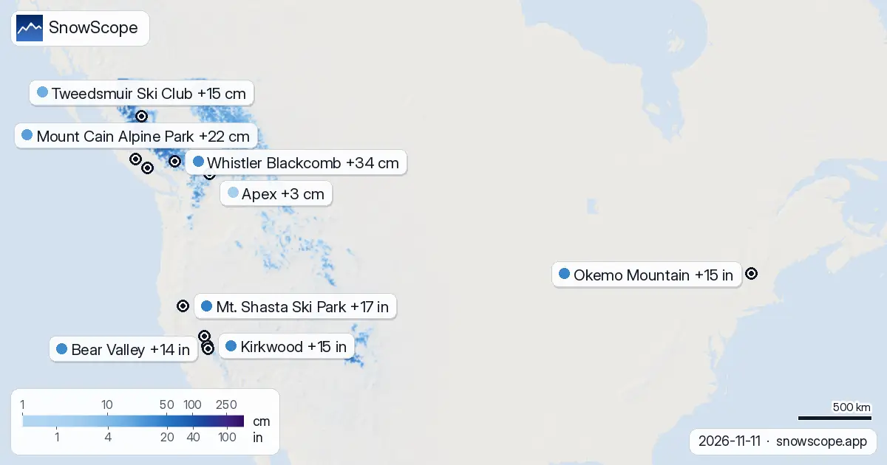

58 cm Neuschnee für La Grave bis Samstag erwartet
Unser Schneemodell sagt erhebliche Schneefälle in den Alpen und Teilen Nordamerikas voraus. La Grave in Frankreich wird voraussichtlich am meisten Schnee erhalten, mit 58 cm Neuschnee bis Samstag, 14. November.
Die Live-Schneeprognose für La Grave in der SnowScope-AppSchneehöhen, Pulverschnee-Alarme und 3D-Karte, gratis.
Alpen: Starke Schneefälle erwartet
Die französischen Alpen werden diese Woche die stärksten Schneefälle erleben. Für La Grave werden in den nächsten 72 Stunden 58 cm Neuschnee prognostiziert. Das nahe gelegene Les Deux Alpes könnte 51 cm erhalten. Diese Mengen sind für die oberen Hänge geschätzt, wobei die Schneefallgrenze für La Grave bei etwa 2.900 m und für Les Deux Alpes bei 2.600 m bis Samstag erwartet wird.
Auch italienische Skigebiete zeigen gute Aussichten. Ponte di Legno wird voraussichtlich 44 cm Neuschnee erhalten und Livigno 42 cm, beide bis Samstag. In der Schweiz könnte Diavolezza-Lagalb 40 cm bekommen. Diese Zahlen stellen die gesamte Akkumulation über die nächsten drei Tage dar, wie von unserem Schneemodell am 11. November geschätzt.
| # | Skigebiet | Region | +24 h | +72 h | Schneefallgrenze |
|---|---|---|---|---|---|
| 1 | La Grave | Alpen · Frankreich | 52 cm | 58 cm | 2.900 m |
| 2 | Les Deux Alpes | Alpen · Frankreich | 45 cm | 51 cm | 2.600 m |
| 3 | Ponte di Legno | Alpen · Italien | 38 cm | 44 cm | 2.300 m |
| 4 | Livigno | Alpen · Italien | 40 cm | 42 cm | 2.200 m |
| 5 | Alpe d'Huez Grand Domaine | Alpen · Frankreich | 34 cm | 42 cm | 2.500 m |
| 6 | Diavolezza-Lagalb | Alpen · Schweiz | 37 cm | 40 cm | 2.300 m |
| 7 | Lagazuoi | Alpen · Italien | 26 cm | 35 cm | 2.200 m |
| 8 | Mölltaler Gletscher | Alpen · Österreich | 17 cm | 35 cm | 2.300 m |
| # | Skigebiet | Region | +24 h | +72 h | Schneefallgrenze |
|---|---|---|---|---|---|
| 1 | Mt. Shasta Ski Park | US-Westen · USA | 0 in (0 cm) | 17 in (43 cm) | 7.200 ft (2.200 m) |
| 2 | Kirkwood | US-Westen · USA | 0 in (0 cm) | 15 in (39 cm) | 9.200 ft (2.800 m) |
| 3 | Okemo Mountain | Nordosten der USA · USA | 3 in (8 cm) | 15 in (38 cm) | 1.000 ft (300 m) |
| 4 | Bear Valley | US-Westen · USA | 0 in (0 cm) | 14 in (36 cm) | 8.900 ft (2.700 m) |
| 5 | Boreal | US-Westen · USA | 0 in (0 cm) | 14 in (36 cm) | 9.500 ft (2.900 m) |
| 6 | Palisades Tahoe Olympic Valley | US-Westen · USA | 0 in (0 cm) | 14 in (35 cm) | 9.800 ft (3.000 m) |
| 7 | Sierra-at-Tahoe | US-Westen · USA | 0 in (0 cm) | 13 in (33 cm) | 9.800 ft (3.000 m) |
| 8 | Homewood | US-Westen · USA | 0 in (0 cm) | 13 in (32 cm) | – |
| # | Skigebiet | Region | +24 h | +72 h | Schneefallgrenze |
|---|---|---|---|---|---|
| 1 | Whistler Blackcomb | Westkanada · Kanada | 16 cm | 34 cm | 2.400 m |
| 2 | Mount Cain Alpine Park | Westkanada · Kanada | 16 cm | 22 cm | 2.000 m |
| 3 | Tweedsmuir Ski Club | Westkanada · Kanada | 12 cm | 15 cm | 1.100 m |
| 4 | Mount Washington Alpine Resort | Westkanada · Kanada | 5 cm | 5 cm | 2.000 m |
| 5 | Apex | Westkanada · Kanada | 0 cm | 3 cm | 2.900 m |
| 6 | Manning Park Resort | Westkanada · Kanada | 0 cm | 3 cm | 2.700 m |
| 7 | Mt. Baldy Family | Westkanada · Kanada | 0 cm | 3 cm | 2.800 m |

US-Westen und Nordosten: Schnee im Anmarsch
Im US-Westen werden für den Mt. Shasta Ski Park in Kalifornien bis Samstag 17 in (43 cm) Neuschnee prognostiziert. Kirkwood, ebenfalls in Kalifornien, wird voraussichtlich 15 in (39 cm) erhalten. Die Schneefallgrenze für diese Gebiete wird hoch erwartet, bei etwa 7.200 ft (2.200 m) für den Mt. Shasta Ski Park und 9.200 ft (2.800 m) für Kirkwood.
Auch der US-Nordosten wird etwas Neuschnee sehen. Für Okemo Mountain in Vermont werden bis Samstag 15 in (38 cm) Neuschnee prognostiziert. Der größte Teil dieses Schnees wird voraussichtlich in den nächsten 72 Stunden fallen, wobei 3 in (8 cm) in den nächsten 24 Stunden erwartet werden. Die Schneefallgrenze liegt hier viel tiefer, bei etwa 1.000 ft (300 m).
Westkanada: Whistler Blackcomb führt
Auch Westkanada erwartet Neuschnee. Für Whistler Blackcomb werden bis Samstag 34 cm Neuschnee prognostiziert, wobei 16 cm in den nächsten 24 Stunden erwartet werden. Die Schneefallgrenze für Whistler Blackcomb wird auf etwa 2.400 m geschätzt.
Mount Cain Alpine Park wird bis Samstag ebenfalls 22 cm Neuschnee erhalten. Diese Mengen basieren auf unserem Schneemodell vom 11. November und stellen den geschätzten Schneefall an den oberen Hängen dar.
Schneevorhersagen verstehen
Schneefallvorhersagen, besonders früh in der Saison, können sich ändern. Die von uns gemeldeten Mengen sind Schätzungen unseres Schneemodells für die oberen Hänge jedes Skigebiets. Die tatsächliche Schneehöhe kann lokal aufgrund von Wind und Gelände variieren.
Frühsaison-Schnee kann dünn sein, und Felsen können direkt unter der Oberfläche verborgen sein. Sei immer über die Bedingungen und potenziellen Gefahren informiert. Die Schneefallgrenze gibt die ungefähre Höhe an, in der Schnee erwartet wird und sich ansammelt, etwa 300 m unterhalb der Nullgradgrenze.
Tipps für Skifahrer
- Konzentriere dich in den Alpen auf höhere Lagen, besonders über 2.900 m in den französischen Alpen, wo die Schneefallgrenze am höchsten sein wird.
- Im US-Westen wird der beste Schnee in höheren Lagen liegen, über 7.200 ft (2.200 m), besonders in Kalifornien.
- Im US-Nordosten bietet Okemo Mountain die bedeutendste Neuschneevorhersage, mit einer niedrigeren Schneefallgrenze um 1.000 ft (300 m).
- Überprüfe immer den offiziellen Lawinenlagebericht, wenn du vorhast, abseits der Piste zu fahren.
- Denke daran, dass die Bedingungen in der Frühsaison eine dünne Schneedecke bedeuten; fahre vorsichtig.
Zu diesen Zahlen
Die Schneehöhen der Skigebiete sind der meiste Schnee in den oberen Hängen laut SnowScope-Schneemodell (etwa 1 km, Lauf vom 11. November); es sind Schätzungen für eine Fläche, keine Messung an einem Punkt. Werte von Messstationen sind Messungen am angegebenen Tag. Prognosen können sich ändern. Lies vor dem Freeriden immer den offiziellen Lawinenlagebericht.
Offizielle Lawinenlageberichte: EAWS (Europe) · avalanche.org (US) · Avalanche Canada
Diesen Bericht zitieren
Für Forschung, Lehre oder Presse: Zahlen und Grafiken sind unter CC BY 4.0 mit dieser Quellenangabe frei nutzbar.
SnowScope (2026), 58 cm Neuschnee für La Grave bis Samstag erwartet, https://snowscope.app/blog/de/2026/11/where-most-snow-falls-next-72-hours-11-november-2026.html, abgerufen am 2026-11-11
SnowScope (Atlas Labs). (2026, November 11). 58 cm Neuschnee für La Grave bis Samstag erwartet. SnowScope snow reports. https://snowscope.app/blog/de/2026/11/where-most-snow-falls-next-72-hours-11-november-2026.html
BibTeX
@misc{snowscope2026wheremostsnowfallsnext72,
author = {{SnowScope (Atlas Labs)}},
title = {58 cm Neuschnee für La Grave bis Samstag erwartet},
year = {2026},
month = nov,
howpublished = {\url{https://snowscope.app/blog/de/2026/11/where-most-snow-falls-next-72-hours-11-november-2026.html}},
note = {Published 2026-11-11 18:44 UTC; accessed 2026-11-11}
}· CC BY 4.0 · Methoden, Daten und Werkzeuge →
La Grave: Schnee und Temperatur nach Höhe, dieser Winter vs letzter (Werkzeuge) →
La Grave folgen
Gratis: eine Nachricht, wenn Neuschnee kommt, und jeden Morgen die Vorhersage.
Weitere Schneeberichte

Unsere tägliche Tabelle folgt dem kommenden Schnee: die Skigebiete mit der größten Prognose für die nächsten 24 Stunden und bis zum 12. November, in …

Wie viel Schnee gewinnen die Berge? Unsere Tabelle zeigt die Skigebiete mit dem meisten prognostizierten Neuschnee für die nächsten 24 Stunden und …

Wo solltest du in den nächsten Tagen sein? Hier sind die Skigebiete mit dem meisten prognostizierten Neuschnee für die nächsten 24 Stunden und bis …